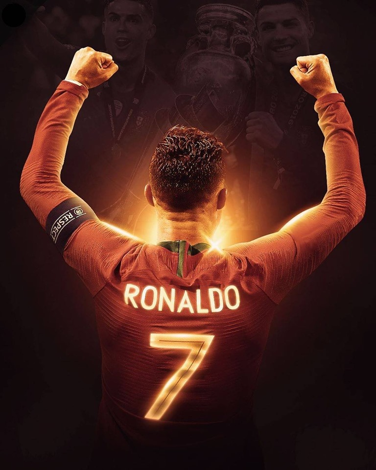
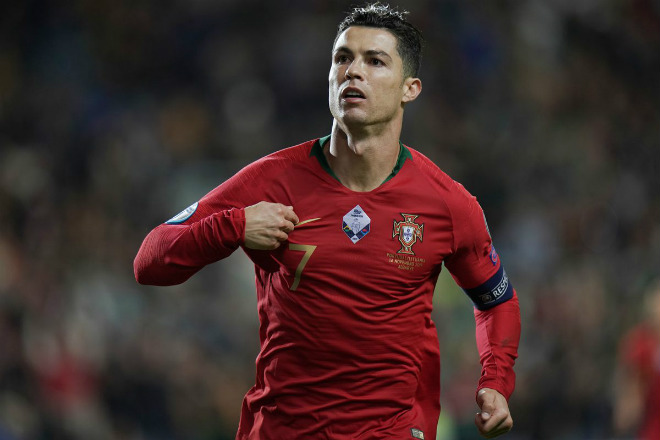
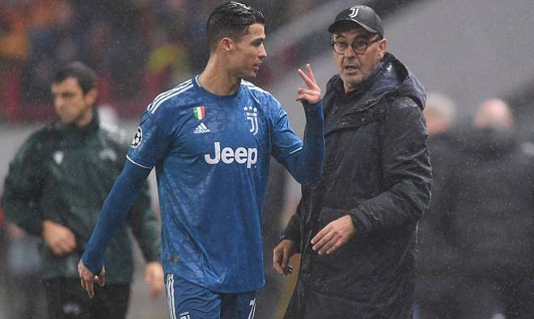
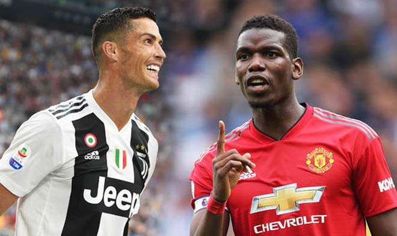

|  |
Ronaldo săn bàn khủng khiếp ở ĐTQG: Đá mấy trận nữa để thành số 1 lịch sử?
Cú hat-trick vào lưới Lithuania ở vòng loại Euro 2020 đã giúp Cristiano Ronaldo nâng cao thành tích ghi bàn trong màu áo ĐT Bồ Đào Nha. Ở tuổi 34, siêu sao thuộc biên chế Juventus sở hữu tổng cộng 98 pha lập công cấp độ ĐTQG và chỉ còn kém 11 bàn so với kỷ lục thế giới của huyền thoại người Iran, Ali Daei (109 bàn/149 trận)... |
|  |
Ronaldo vẽ siêu phẩm, lập hat-trick rực rỡ: Bỏ xa Messi, tiến sát mốc 100 vĩ đại
Với cú hat-trick vào lưới Lithuania, Cristiano Ronaldo tiến sát cột mốc 100 bàn đáng nhớ trong màu áo đội tuyển quốc gia... |
|  |
Ronaldo nổi giận quyết rời Juventus, trở lại MU cứu rỗi đồng đội cũ Solskjaer
MU đang trong những tháng ngày khốn khó với HLV Ole Gunnar Solskjaer. Ở Juventus, Ronaldo đang rất không hài lòng vì liên tục bị thay người. Giờ là lúc để Ronaldo trở lại Old Trafford, bởi cả hai đang cần nhau?
Sự kiện: Manchester United, Maurizio Sarri, Juventus F.C |
|  |
Được Ronaldo thông qua, Juventus đẩy mạnh thương vụ siêu kỷ lục từ Man Utd.
Đội chủ sân Allianz hỏi ý kiến siêu sao Cristiano Ronaldo về một thương vụ chuyển nhượng bom tấn và anh được cho là đã chấp thuận... |